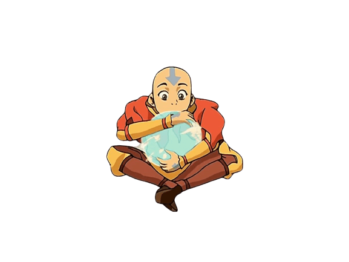
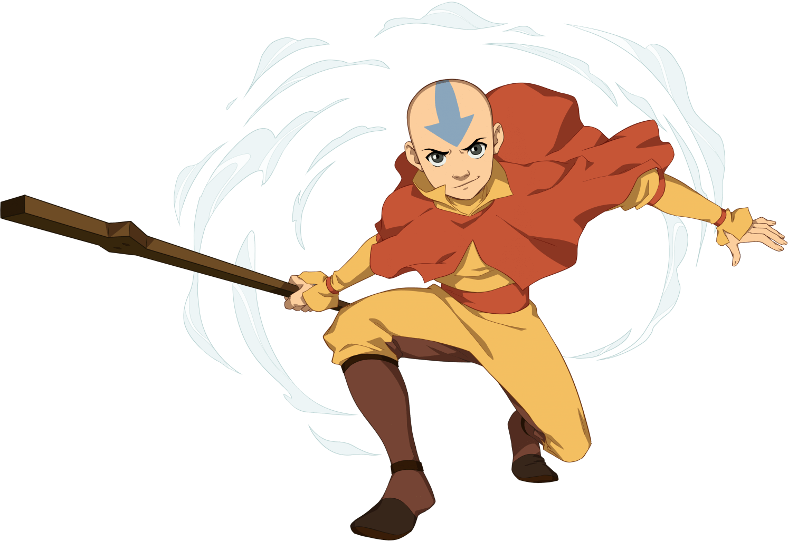
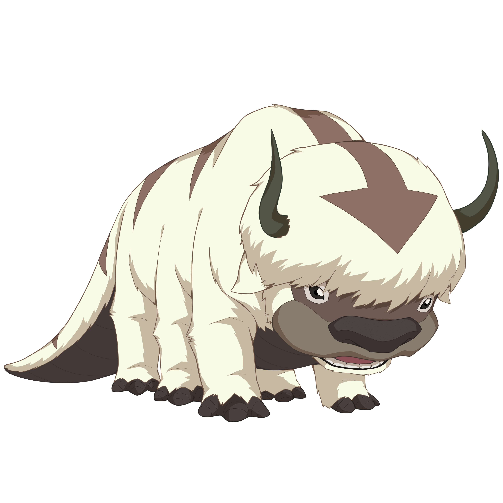
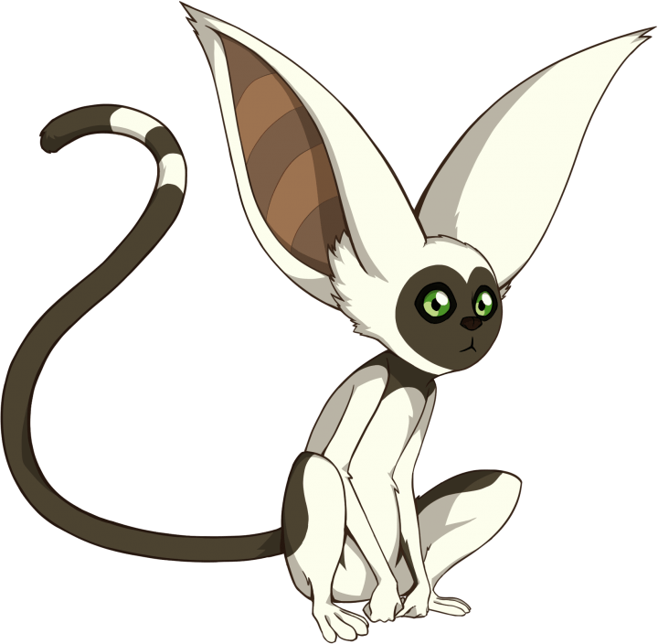

Los Nómadas Aire son una orden monástica aislada y teocrática que practica la disciplina del Aire Control. Son una de las cuatro naciones principales y están compuestos por hombres y mujeres viajeros. Aunque son nómadas, tienen cuatro Templos Aire ubicados en las esquinas del globo, ocultos en cadenas montañosas y acantilados, incluyendo uno en el norte del Reino Tierra y tres en islas remotas. A diferencia de otras naciones, todos los miembros de los Nómadas Aire son maestros debido a su alto nivel de espiritualidad.

Aire Control
El Aire Control es una habilidad de eoloquinesis que permite controlar y manipular las corrientes de aire. Los Nómadas Aire utilizan esta técnica en su vida diaria y su enfoque clave es la flexibilidad y seguir el camino de menor resistencia. Es principalmente una habilidad defensiva y dinámica. Los Maestros Aire pueden realizar ataques poderosos, pero debido a la naturaleza pacifista de los Nómadas Aire, rara vez los usan. Prefieren adaptarse a la situación y utilizar maniobras evasivas en lugar de enfrentamientos directos.
Personajes Favoritos

Aang
Él es un niño de 13 años, el último Maestro Aire y el Avatar, capaz de controlar los cuatro elementos: agua, tierra, fuego y aire.

Appa
Un bisonte volador y fiel mascota del Avatar Aang. Appa tiene un gran sentido del humor (segun Zokka)

Momo
Es un Lemur volador que siempre tiene hambre
Extinción
En el año 0 DG, los Nómadas Aire fueron víctimas de un genocidio perpetrado por la Nación del Fuego. El único sobreviviente conocido de esta masacre fue el Maestro Aire y Avatar de doce años llamado Aang. Antes de que comenzara la Guerra de los Cien Años, Aang escapó del Templo Aire del Sur y quedó atrapado en animación suspendida en un globo de hielo junto con su compañero Appa. Cien años después, fue liberado por Katara y Sokka. Juntos, ayudaron a Aang en su misión de restaurar el equilibrio y la paz en las naciones en guerra.